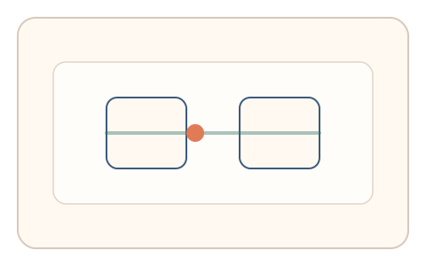
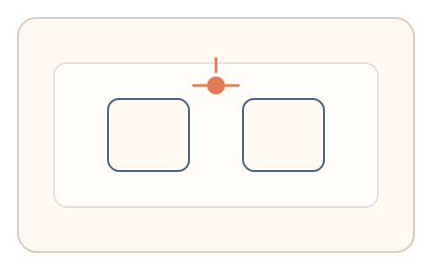

#103
Morphological Analysis - Combination Batches
已扩展
双稳态翻转拖拽
在双稳态刺激拖拽中标记感知翻转时刻，以翻转潜伏期与拖拽节律一致性验证真实性。
概念原文
用户在拖拽过程中标记首选感知并按键记录翻转时刻，系统比较翻转潜伏期与拖拽节律的任务内一致性。任务结构为持续追踪，信号形态为翻转潜伏期与节律序列。
把双稳态的动态特征融入动作轨迹。
研究背景
双稳态感知会产生自发翻转，翻转潜伏期具有稳定统计特征。将翻转标记与拖拽节律结合，可形成难以仿真的动态特征。
核心机制
- 呈现双稳态图形并要求持续拖拽。
- 用户在感知翻转时按键标记。
- 记录翻转潜伏期与拖拽节律。
- 比较两者的任务内一致性。
用户流程
- 步骤 1：用户开始拖拽双稳态刺激。
- 步骤 2：感知翻转时按键记录。
- 步骤 3：系统分析潜伏期与节律并判定。
判定信号
翻转潜伏期序列
双稳态翻转具有稳定的时间分布。
拖拽节律与一致性
真实用户节律与翻转节奏存在自然耦合。
判定逻辑
潜伏期与节律需落在人类分布区间，且两者存在合理关联；过度一致或无翻转判异常。
对抗面
- 脚本固定时间间隔伪造翻转
- 重放真实用户的翻转序列
防御与缓解
- 随机化双稳态刺激参数
- 引入轻微扰动降低固定时间策略
- 叠加轨迹微抖动与停顿信号
可达性与风险
提供可选慢速模式与替代任务，避免对注意力障碍用户造成负担。
- 部分用户不易感知翻转
- 设备刷新率影响双稳态感知
可视化状态

状态 1：双稳态拖拽
用户拖拽双稳态刺激。

状态 2：翻转标记
感知翻转时按键标记。

状态 3：一致判定
比较潜伏期与节律一致性。
参考资料
Bistable perception
说明双稳态感知与翻转潜伏期。
Perceptual multistability
说明多稳态感知的动态特征。